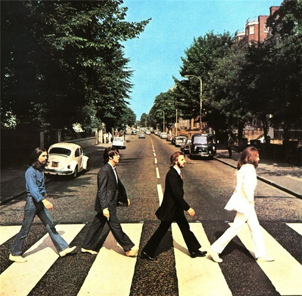
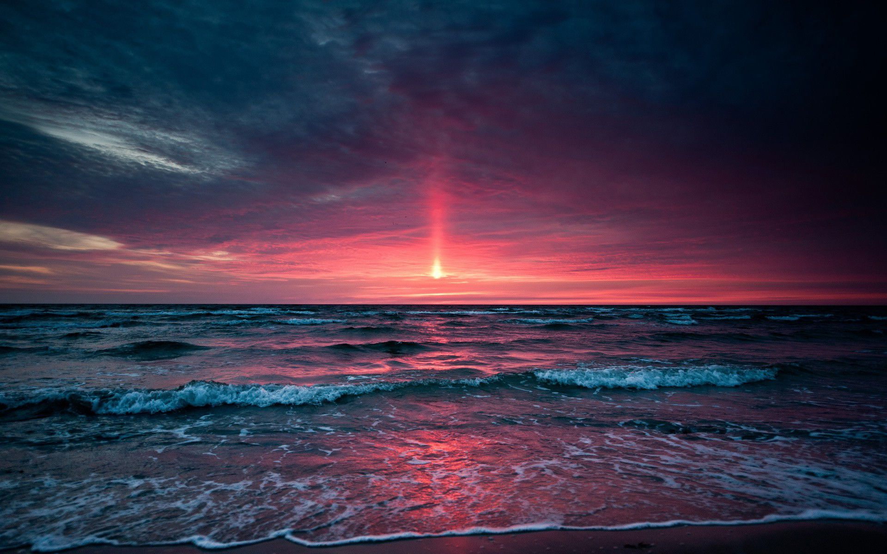

Навигация
История фотографии. Изобретения, начавшие эру фотографии. Известные имена в этой области. Кратко о работе первых фотокамер и в принципе о самом механизме и процессе съемки тех лет.

Значимые события в фотографиях. Самые известные моменты истории, запечатленные на камеру.

Современное видение фотографии. Что включает в себя понятие современной фотографии и как отличить ее от других направлений. Основные понятия, такие как концептуальная и междисциплинарная фотография. Арт-искусство